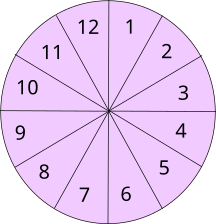
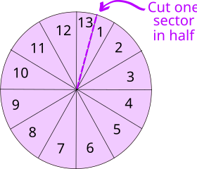
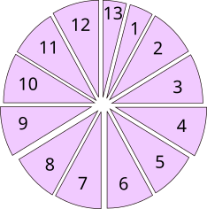
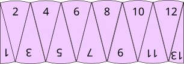
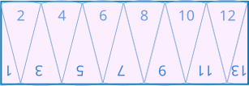

Activity: Find an Approximate Value For Pi
You can read about π (Pi) first
 |
You will need:
|

Step 1
Draw a circle on your card. The exact size doesn't matter, but let's use a radius of 5 cm (centimeters).
Use your protractor to divide the circle up into twelve equal sectors.
What's the angle for each sector? That's easy – just divide 360° (one complete turn) by 12:
So each of the angles must be 30°
Step 2
Divide just one of the sectors into two equal parts – that's 15° for each sector.
You now have thirteen sectors – number them 1 to 13:

Step 3
Cut out the thirteen sectors using the scissors:

Step 4
Rearrange the 13 sectors like this (you can glue them onto a piece of paper):

Now that shape resembles a rectangle:

Step 5
What are the (approximate) height and width of the rectangle?
Its height is the circle's radius: just look at sectors 1 and 13 above. When they are in the circle they are "radius" high.
Its width (actually one "bumpy" edge), is half of the curved parts around the circle ... in other words it is about half the circumference of the original circle. We know that:
Circumference = 2 × π × radius
And so the width is:
Half the Circumference = π × radius
And so we have (approximately):
| radius | |
| π × radius |
With a radius of 5 cm, the rectangle should be:
- 5 cm high
- about 5π cm wide
Step 6
Measure the actual length of your "rectangle" as accurately as you can using your ruler.
Divide by the radius (5 cm) to get an approximation for π
Put your answer here:
| "Rectangle" Width |
Divide by 5 cm ≈ π |
Remember π is about 3.14159... how good was your answer?
Note: You could probably get a better answer if you:
- used a bigger circle
- divided your circle into 25 sectors (23 with an angle of 15° and 2 with an angle of 7.5°)
Optional Step
You could work out the percentage error in your answer. You can discover how to do this on the page Percentage Difference vs Percentage Error.